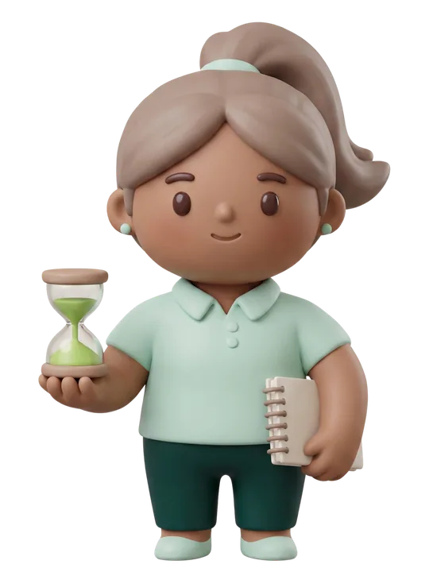

Tu número de siempre, el 611 234 567, sigue en tu móvil como siempre. Hugo y Leo atienden por detrás, en ese mismo número.
- Historial sincronizado
- Nombre de la clínica verificado
Conexiones · revisado hace 2 min
Todo lo que tus agentes pueden usar para trabajar. Sin tecnicismos.
Catálogo de clínica dental
Ya están trabajando en tu clínica. No tienes que hacer nada con ellas.
Tu número de siempre, el 611 234 567, sigue en tu móvil como siempre. Hugo y Leo atienden por detrás, en ese mismo número.
Desvío activo desde el 912 345 678. Si tu equipo no coge la llamada, Hugo la atiende y toma nota de todo.
Google Calendar conectado como recepcion@clinicaaurora.es. Las citas que crean tus agentes aparecen ahí al momento.
El buzón citas@clinicaaurora.es llega a tu agente. Hugo responde las consultas y avisa a tu equipo cuando hace falta.
Funciona con cualquier programa de gestión, tenga conexión o no. Tus agentes proponen y tu equipo confirma. Es la razón por la que podemos empezar la semana que viene aunque tu software no se conecte.
Tienen una forma de conectarse ya documentada. Tú pides el alta y nosotros la dejamos funcionando.
Cuando esté activa, conecta de una vez con 13 programas de gestión distintos, entre ellos Clinic Cloud, TuoTempo, Nubimed y Odontonet.
Tiene conexión propia documentada. Lectura incluida; para que el agente escriba citas hace falta su suscripción.
Conexión disponible a través de Doctoralia. En cuanto tengamos el alta de socio, tu clínica entra sin trabajo extra.
Sin conectar. Conecta tu ficha y te avisamos de cada reseña nueva, para que ninguna se quede sin respuesta.
Para enviar enlaces de pago de presupuestos. El paciente paga desde el móvil y tu equipo lo ve al momento.
Para que el paciente firme desde el móvil antes de venir. Llega firmado y tu equipo deja de perseguir papeles.
Se pueden hacer, pero llevan trabajo a medida. Preferimos decírtelo antes de empezar y no después.
Es el programa más usado en las clínicas dentales españolas y no tiene conexión directa: hay que instalar un pequeño programa en tu servidor que lee tu agenda, con contrato de protección de datos. Se presupuesta aparte.
Su versión en la nube sí permite conexión. Lo comprobamos en la fase de viabilidad, antes de que firmes nada.
Para que Nora ofrezca el pago a plazos ya aprobado, sin que el paciente tenga que volver otro día a preguntar.
Tu equipo de rayos sigue funcionando igual. Tus agentes no tocan la imagen. Si algún día quieres avisos automáticos alrededor de ella, se estudia como proyecto.
No es lo mismo una clínica dental que una residencia o un centro de imagen. Cada tipo de centro tiene su propio catálogo, y ya está montado.

En residencias entramos por el teléfono y el WhatsApp de las familias, sin tocar su programa asistencial. La conexión con ResiPlus o Aegerus se acuerda con el fabricante.

Aquí la conexión es un módulo de proyecto con nombre propio: es lo que permite citar sobre los huecos reales de cada máquina.

DriCloud es la que mejor permite citar. flowww puede requerir su plan más alto.
Cada cosa que no tocamos es una cosa menos que se puede romper. Tu programa sigue mandando donde tiene que mandar.
Nosotros no tocamos tus facturas ni tu Verifactu. Ese terreno es tuyo y de tu asesoría, y así se queda.
Ni las movemos, ni las guardamos, ni las enseñamos. Tu equipo de imagen trabaja exactamente igual que hoy.
Avisamos de que están listos y derivamos a tu portal o a tu profesional. Quien informa al paciente sigue siendo tu equipo.
No lo sustituimos ni te pedimos que lo apagues. Nosotros atendemos por teléfono y WhatsApp, y el portal sigue siendo el portal.

Dínoslo en la visita. Lo estudiamos y te decimos la verdad: si se puede conectar, cuánto cuesta, y si no se puede, cómo lo resolvemos con la cola de revisión.